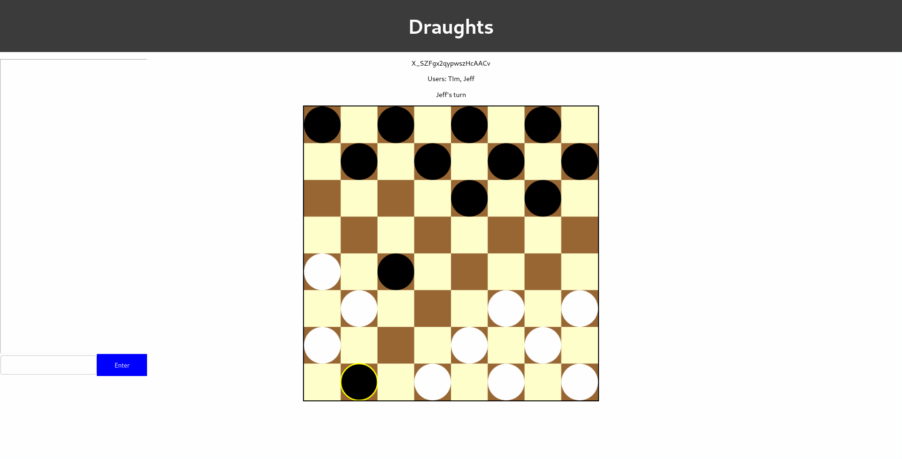
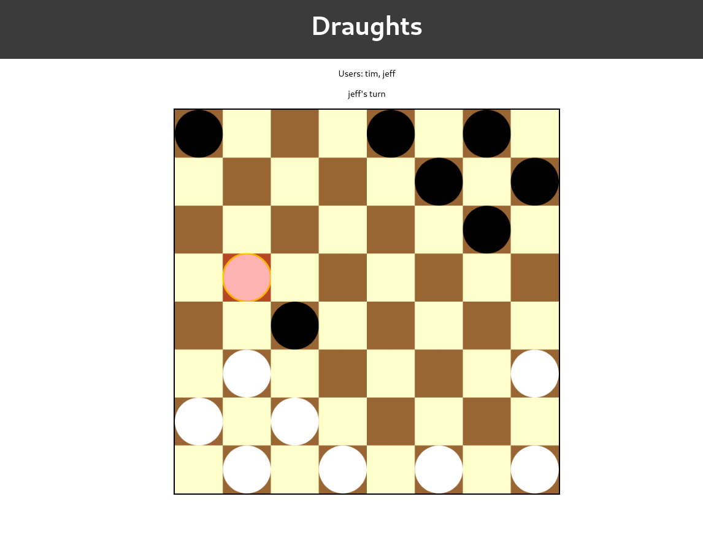
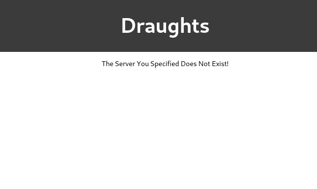
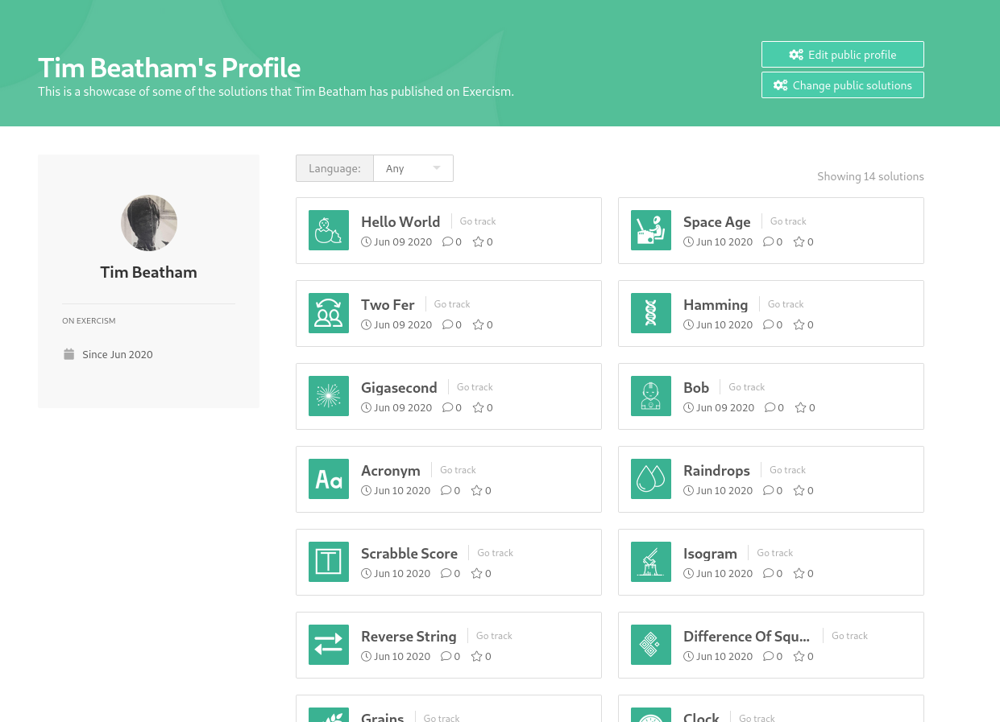

This week I fully implemented the draughts game. I limited each server so that only two people can log onto the server at one time. The game starts when two users connect to the same server instance. If a user disconnects then the other user is redirected to the main menu.
When a draughts piece gets to the other side of the board it is given a yellow outline which signifies that the piece has been promoted to a king piece. This means it can go in any of the four diagonal directions.
When a chain move is available the user is forced into the chain move, which is shown above. After the user makes the first move of the chain move the piece is highlighted red demonstrating that a chain is available.
Up until now I have not added any error handling, and when a user attempts to join or create a server there is likely to be some cases where the user has entered a server which does not exist. Or when the user enters a username which is already taken. To handle these exact scenarios I decided to add a new component to the React application which checks if the username is taken, if the server exists and if the server is already full. This gives the user detailed information explaining why they cannot connect to the server.
Additionally this week I came across a website which helps users to improve their programming skills. On the site you have to complete exercises and then upload your solutions. After your solutions have been uploaded a mentor evaluates your solution and gives you pointers on how you can improve your solution.
Currently there are 45 tracks to choose from and I highly recommend using the site if you want to learn a new programming language.
This week I decided to take a break and not do a lot of work. So I am afraid this weeks blog post is short. However next week I aim to develop my own mobile application and put it on the app store. I attend to link it in some way to web scraping.